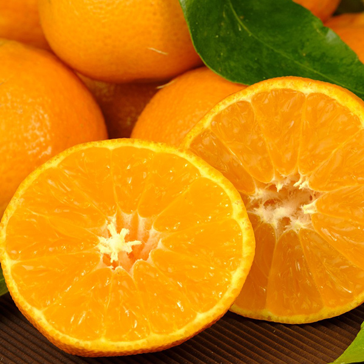
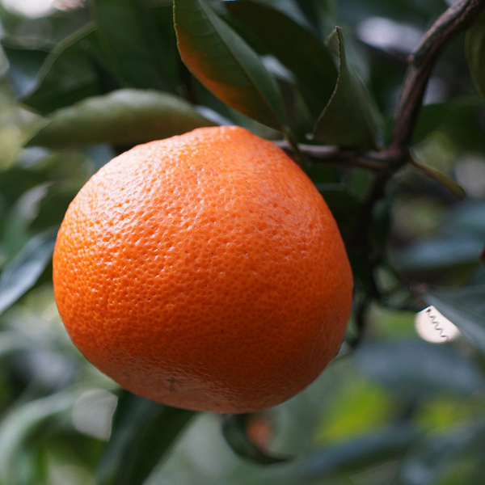
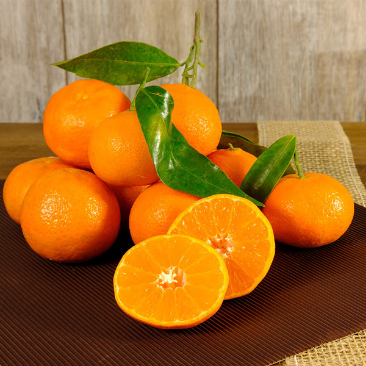

栽培みかんの紹介

温州みかん
愛媛県内で一番多く栽培されているのが「温州みかん」です。温室みかんを含めると出荷はほぼ一年を通して行われており、果皮・袋ともに薄く、食べやすいのが特徴です。

伊予柑（いよかん）
「伊予」は愛媛県の昔の呼び方で、伊予で盛んに育てられていたことから、伊予柑（いよかん）の名前になりました。甘みに加えて酸味もあり、爽やかな風味を味わうことができます。現在も愛媛県を中心に育てられている品種です。爽やかな香りとジューシーな味わい

紅まどんな
愛媛県が育成した品種で、ゼリーのような食感と甘い果汁、独特の香りが特徴です。愛媛の温暖な気候や適切な土地条件が、この品種の栽培に適しています。